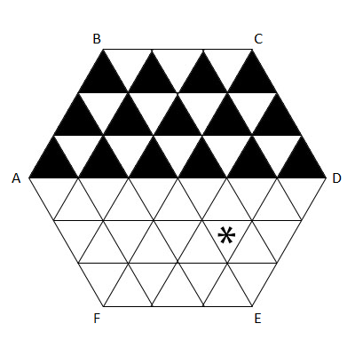

A regular hexagon table of side length $N$ is divided into equilateral triangles of side length $1$. The picture below is an illustration of the case $N = 3$.

An flea of negligible size is jumping on this table. The flea starts at the centre of the table. Thereafter, at each step, it chooses one of the six corners of the table, and jumps to the mid-point between its current position and the chosen corner.
For every triangle $T$, we denote by $J(T)$ the minimum number of jumps required for the flea to reach the interior of $T$. Landing on an edge or vertex of $T$ is not sufficient.
For example, $J(T) = 3$ for the triangle marked with a star in the picture: by jumping from the centre half way towards F, then towards C, then towards E.
Let $S(N)$ be the sum of $J(T)$ for all the upper-pointing triangles $T$ in the upper half of the table. For the case $N = 3$, these are the triangles painted black in the above picture.
You are given that $S(3) = 42$, $S(5) = 126$, $S(123) = 167178$, and $S(12345) = 3185041956$.
Find $S(123456789)$.
solve(N=3) → ?solve(N=123456789) → ?solve(N=12345) → ?